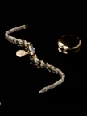
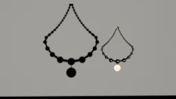
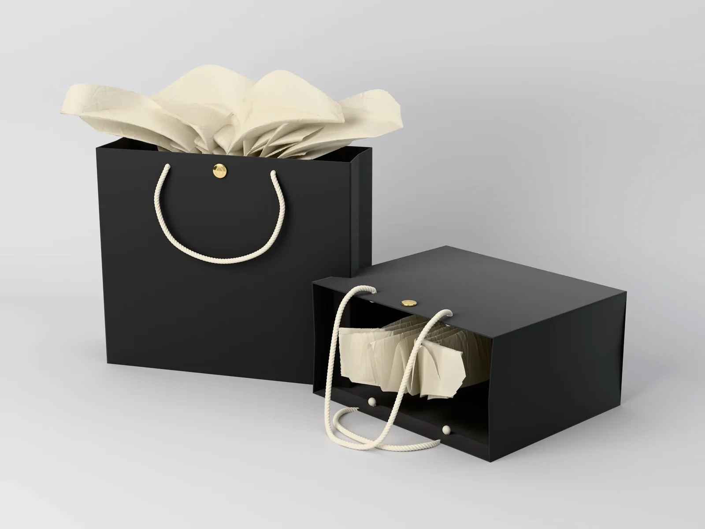

STAND-IN · img/lustre/front/master.* (the front, 16K render, once David passes its 1600 preview (stand-in: catalogue144 lustre_front_256x144.png; phones: lustre_front_108x144.png); 16K, 15360 × 8640)
STAND-IN · img/lustre/front/master.* (the front, 16K render, once David passes its 1600 preview (stand-in: catalogue144 lustre_front_256x144.png; phones: lustre_front_108x144.png); 16K, 15360 × 8640) STAND-IN · img/lustre/three-quarter/master.* (three-quarter view, 8K (stand-in: catalogue144 lustre_threequarter_256x144.png; phones: _108x144); 8K, 7680 × 4320)
STAND-IN · img/lustre/three-quarter/master.* (three-quarter view, 8K (stand-in: catalogue144 lustre_threequarter_256x144.png; phones: _108x144); 8K, 7680 × 4320) STAND-IN · img/lustre/back/master.* (back view, 8K (stand-in: catalogue144 lustre_back_256x144.png; phones: _108x144); 8K, 7680 × 4320)
STAND-IN · img/lustre/back/master.* (back view, 8K (stand-in: catalogue144 lustre_back_256x144.png; phones: _108x144); 8K, 7680 × 4320)Where it is going
The vanity
The mirrored tray, the compact’s lid closing.
Chapter I · Accessories
Lustre
Necklace
Scroll to walk around it
Chapter I
Lustre
Necklace
Named for the chandelier. Thirty-seven crystals of faceted rock crystal, largest at the centre, strung on 18k gold, and below them a gold disc with the Ö raised on it.
- CRYSTALS
- FACETED ROCK CRYSTAL, 37
- GOLD
- 18K, POLISHED
- DISC
- 20.8 MM, THE Ö RAISED
- LENGTH
- ABOUT 420 MM
PRICE ON REQUEST
Keep a seatThe register sees the pre-sale first.
Details
- Pre-sale
- Made to order. We email your delivery date once production is confirmed. Cancel for a full refund any time before production starts.
- Returns
- Exchanges within 14 days of delivery, unused and with tags.
- Care
- Keep it in its pouch, apart from other pieces. Wipe with a soft dry cloth. Care
- Size
- The measurements

STAND-IN · img/lustre/world/master.* (the still: the last frame, the world plate (the vanity); 8K, 5760 × 7680)Where it is going · the still
The vanity
The mirrored tray, the compact’s lid closing.
On the screen in the film, the picture is tomorrow: each piece in the place it is going, with one place kept for someone.
The filmClose
 STAND-IN · img/lustre/detail-detail/master.* (the disc and the centre crystals, 8K close-up; 8K, 7680 × 4320)
STAND-IN · img/lustre/detail-detail/master.* (the disc and the centre crystals, 8K close-up; 8K, 7680 × 4320)The disc and the centre crystals

STAND-IN · img/lustre/detail-shadow/master.* (its shadow in the projector’s beam, 8K close-up; 8K, 7680 × 4320)Its shadow in the projector’s beam
The packaging
The house lights go down. Black board, cream tissue the colour of the screen, and one gold disc between you and the first scene.
 STAND-IN · img/shared/pack-closed/master.* (packaging/chapter1/renders: closed (the approved final, 3840 px); 8K, 7680 × 4320)
STAND-IN · img/shared/pack-closed/master.* (packaging/chapter1/renders: closed (the approved final, 3840 px); 8K, 7680 × 4320)The closed box, its band and the gold disc
 STAND-IN · img/shared/pack-open/master.* (packaging/chapter1/renders: open (the approved final, 3840 px); 8K, 7680 × 4320)
STAND-IN · img/shared/pack-open/master.* (packaging/chapter1/renders: open (the approved final, 3840 px); 8K, 7680 × 4320)The open box, the piece folded in cream tissue
 STAND-IN · img/shared/pack-disc/master.* (packaging/chapter1/renders: disc (the approved final, 3840 px); 8K, 7680 × 4320)
STAND-IN · img/shared/pack-disc/master.* (packaging/chapter1/renders: disc (the approved final, 3840 px); 8K, 7680 × 4320)The gold disc on the band

STAND-IN · img/shared/pack-shopping/master.* (packaging/chapter1/renders: shopping (the approved final, 3840 px); 8K, 7680 × 4320)The shopping bag with cream tissue
 STAND-IN · img/shared/pack-trims/master.* (packaging/chapter1/renders: trims (the approved final, 3840 px); 8K, 7680 × 4320)
STAND-IN · img/shared/pack-trims/master.* (packaging/chapter1/renders: trims (the approved final, 3840 px); 8K, 7680 × 4320)The hang tag, the card and the sealed envelope